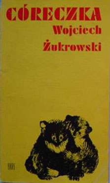
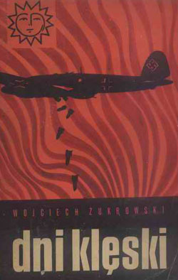

← Powrót do archiwum
Galeria okładek książek
Projekty graficzne różnych wydań. Wybierz okładkę, aby obejrzeć ją z bliska.

Białe zaproszenia
Pozycja 1 z 33

Córeczka
Pozycja 2 z 33

Córeczka
Pozycja 3 z 33

Czarci tuzin
Pozycja 4 z 33

Dni klęski
Pozycja 5 z 33
Dni klęski
Pozycja 6 z 33

Dni klęski
Pozycja 7 z 33

Kamienne tablice
Pozycja 8 z 33

Kamienne tablice
Pozycja 9 z 33

Kamienne tablice
Pozycja 10 z 33

Kierunek Berlin
Pozycja 11 z 33

Na tronie w Blabonie
Pozycja 12 z 33